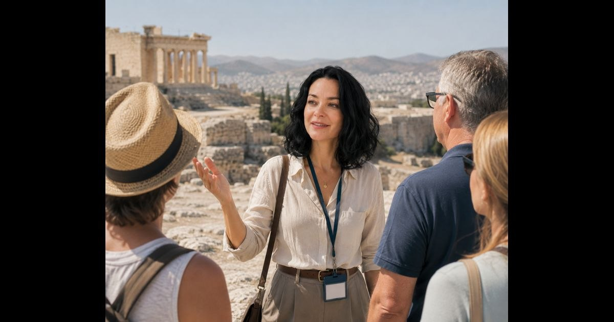

Formation à Athènes
Sonia Line a étudié dans une université de lettres et sciences humaines à Athènes, avec une spécialisation dans l’enseignement du grec et de l’anglais. Elle a aussi suivi une formation en management et économie.
Parcours
Sonia Line accompagne les élèves avec une approche humaine, claire et inspirée par ses années passées en Grèce.


Sonia Line a étudié dans une université de lettres et sciences humaines à Athènes, avec une spécialisation dans l’enseignement du grec et de l’anglais. Elle a aussi suivi une formation en management et économie.
Vivre en Grèce pendant dix ans lui a permis de comprendre la langue dans la vie quotidienne, les traditions, les habitudes et la chaleur des échanges.
Elle a travaillé dans le secteur bancaire, au consulat de Grèce, comme traductrice du grec et comme guide. Ces expériences rendent ses cours concrets et proches de situations réelles.
Sonia Line a traduit en grec un livre documentaire de 390 pages. Ce travail montre sa précision linguistique et son goût pour les textes exigeants.
Elle aime la langue grecque, la mythologie, la culture, la mer, le soleil et l’atmosphère méditerranéenne. Ses cours transmettent cette passion avec simplicité.
Le parcours de Sonia Line donne aux cours une dimension vivante, culturelle et pratique.
Contacter Sonia Line